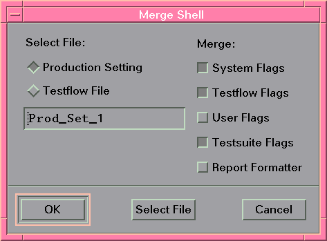

Merging Production Settings
To merge existing Production Settings:
- Set up the flags as required (see Accessing Testflow Settings for details).
- Choose Merge... from the File menu.
A screen similar to the figure below appears.

- In the Select File: area, select either a Production Setting or Testflow File using the Select File button.
- Choose the desired flags stored in the selected file by clicking the toggle buttons, and
click OK.
Your previous flag settings are overwritten by the "merged-in" settings.
- Save the modified flag settings in a new Production Settings file as described in the previous section Creating Production Settings.